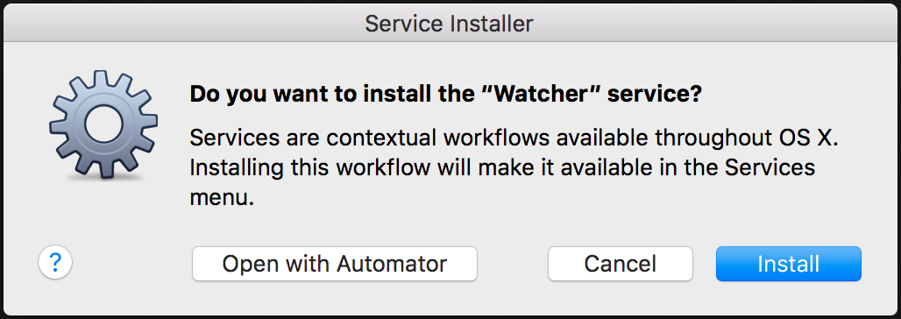
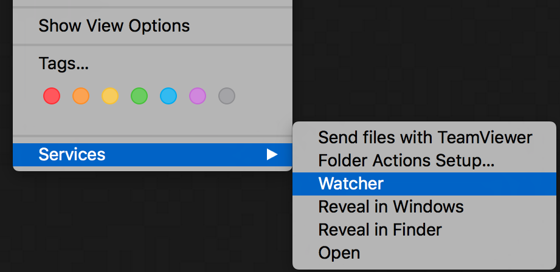

Watcher
Automatically refresh your browser when a file is changed.
There is a workflow service and a ruby script included in this. They both do the same and the service is just a GUI wrapper for the script.
The script monitors for a file to change in the specified folder. If it sees a change then an embedded apple script is used to refresh the browser of your choosing. You can currently choose between safari and chrome. There is a keyword that is used to identify which browser tabs will be refreshed. i.e. a keyword of "localhost" will only refresh browser pages with "localhost" in the URL.
This program is based on a post by Brett Terpstra
Setup
Service (Workflow)
To install the service simple double click on the Watcher.workflow and select Install.
After this you can right click on the folder you want to watch and under Services select Watcher
Ruby Script
To run the ruby script navigate to the install folder and run the following:
./watcher.rb path_to_watch keyword browser
Currently the only supported browsers are chrome and safari. both must be entered all lower case.